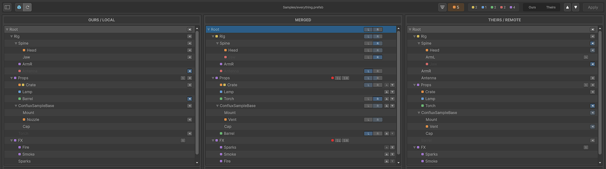
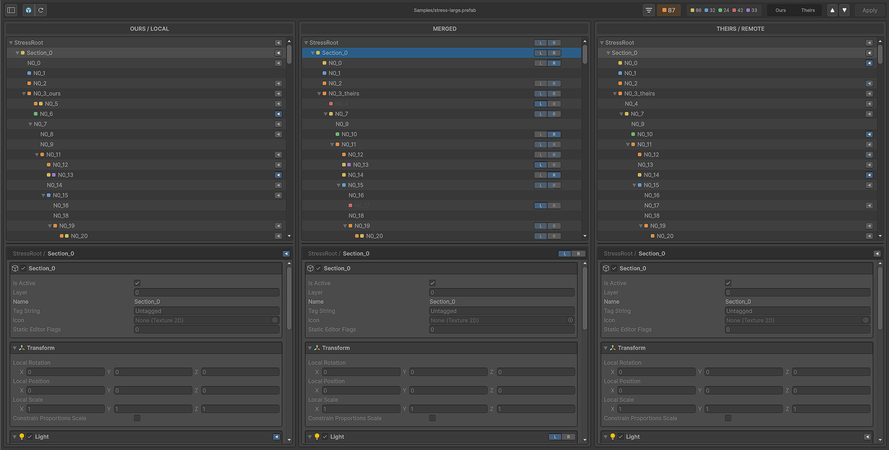
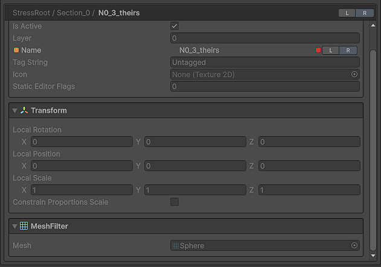
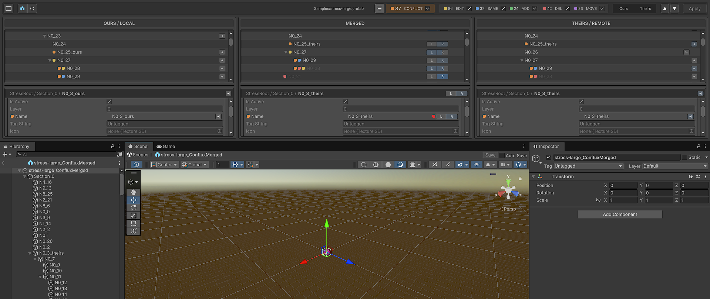
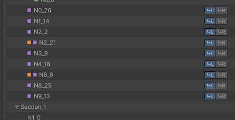

Semantic three-way diff
Every GameObject, component and property gets classified against the common ancestor: added, removed, changed on one side, changed the same way on both, or a real clash. Only the clashes are a question for you. The rest merge on their own.

Three panels, one row layout
Ours, Merged and Theirs sit side by side, each with its own hierarchy and inspector. Selection, expansion and scrolling stay in step. All three columns share one row plan, so a property lands at the same height in every column by construction, not by syncing scroll positions and hoping. Drag a column's header to rearrange the three into whatever order you read best. Values are shown rather than edited: one enters the merge by picking a side, so there's no third version of the truth to keep track of.

Resolve as coarsely or as finely as you want
One arrow takes a whole GameObject or component from one side. If you'd rather go property by property, every diffing row carries its own picker. Narrower wins over wider: refine a property after taking a branch and the refinement sticks, while a fresh pick at a wider scope answers for that whole scope again and discards the refinements under it.
Changes only one side made get pickers too, not just clashes. They resolve to Theirs by default, so a change of yours the other branch never touched is a decision in front of you rather than something that goes missing without a conflict marker anywhere. Every picker reports on its own scope: an arrow lights only when that side is the sole source of everything decided beneath it, and a scope you drew from both is outlined instead.

A merged preview you can open
The merged result is rebuilt from scratch after every decision and opens in Unity's real Prefab Mode. It's the actual prefab, built by the same APIs that will write it when you hit Apply. Each refresh re-saves and reopens the stage, so the Scene View framing resets.

Structure gets its own decisions
Sibling order, component order and reparenting are tracked apart from values, so a reorder on one branch and an edit on the other can both survive. When neither side's order is what you want, arrange it yourself in the Merged panel.

It backs up before it overwrites
Before it overwrites anything, Apply spells out what will change in the file on your side:
what's added, removed, moved, and which property of which object ends up different.
Apply also offers to save the prefab as it stood on your side before the merge, taken from the
clean version rather than the marker-riddled file in your working copy. It lands in
ConfluxBackups/ in the project folder, or wherever you point it in Preferences;
aim it inside Assets/ and backups get a .bak extension so Unity
never imports one as a second prefab. If the backup can't be written, nothing is overwritten.
It checks what it wrote
Every merge tool tells you it succeeded. This one reads the file back through Unity's own loader afterwards and compares it with the result you approved: every object, every component and its position in the list, every serialized value, every reference. Agreement is silent. A difference is named, object by object and property by property, along with where your backup went. It's a self-check, not a second opinion, and it catches the half no confirmation dialog can: what Unity's serializer did after you clicked.
Identity is part of that comparison. A prefab's objects are named from outside the file by an id, so a merge that quietly renumbers them leaves every variant, every scene instance and every reference pointing into the prefab aimed at nothing, while the file itself reads as perfectly correct. Yours keep their ids, the objects arriving from the other branch get theirs back, and the check says so rather than assuming it.
Variants and nested prefabs
A variant's file has almost nothing in it: a reference to its base and a few stubs. Conflux reads the base and shows the inherited hierarchy inline, so a variant's panels look like the prefab does in the Inspector rather than like the three objects the file happens to contain. Overrides and renames on inherited objects come with it, and an ordinary nested instance is read the same way, so a per-branch override lands on the object it belongs to.
Deletions too. A variant doesn't leave a deleted object out of its file, it records that it removed one, and a tool that reads the overrides and ignores that list hands the object back: the branch that deleted something quietly loses the argument. Here it's marked deleted on that side, the row is ghosted, and you're asked. Delete on one side against an edit on the other is a clash, which is what it is.
One shape it won't merge, and says so: an instance one branch unpacked. Unpacking mints fresh fileIDs for the whole subtree, so nothing in it can be matched to what it used to be, and there is no honest merge left to make. You get a warning strip on that side instead of a confident wrong answer.
Whatever you version with
Git, Subversion, Mercurial, Perforce and Plastic SCM. Detection is automatic, and only the step that fetches the three versions differs between them, so everything you see and every decision you make is identical either way. Plastic needs its external merge tool pointed at Conflux once; the launcher is generated for you.
Keep both
Where both branches appended to the same list, take both. It starts from Theirs, appends the Ours entries that aren't already present, keeps the order and skips duplicates. Two entries are the same one when every value they're made of agrees, so references, strings and lists of your own structs all work without Conflux knowing anything about the type. The one shape it won't offer is an entry that holds an array of its own.
Show only what you're looking for
The tally beside the toolbar is also the filter. Open it and a checkbox slides onto each kind: uncheck one and it leaves the hierarchies and the inspector together, rows, markers, component blocks and property rows alike. An object stays while anything under it still matches, so narrowing to deletions doesn't hide the parents you reach them through, and rows keep how you left them when a kind comes back. Reorders are the exception, and deliberately not a switch: they show only while everything else does, because an order decision covers a whole list and a list with rows filtered out of it isn't one you can answer for. Nothing is hidden from the write, though. The count of what's outstanding still counts all of it, and Apply is still blocked by what you can't see.
Built for a whole branch merge
A branch merge rarely conflicts in one prefab. The sidebar counts how many of the listed conflicts already hold a merged result, and applying one opens the next that still needs merging, so seven files isn't seven round trips. Turn that off in Preferences if you'd rather stay on the result you just wrote.
Sample conflicts, built in
Fifteen hand-built scenarios: value clashes at two depths, identical edits, modify/delete, sibling and component reorders, reparents, renames and objects added on both sides, an array both branches appended to, nested prefab overrides, a prefab variant, an unpacked nested prefab, and one that stacks all of it five levels deep. They open through the same pipeline a real conflict does, so they're a decent way to learn the window before a real merge is on fire. Only Apply differs: samples are read-only, since there's no conflicted file behind them.
No apply all
Deliberately absent. Every write asks first and says what it will change, and a batch would either skip that after the first file or ask you once per file anyway. Overwriting prefabs in someone's repository is not a thing to do behind a single confirmation.
Send a broken merge back
If a merge comes out wrong, the window's tab menu exports a single zip: the three staged versions exactly as your version control produced them, the decisions you made, and your Unity version. It asks before it packages anything and sends nothing anywhere.